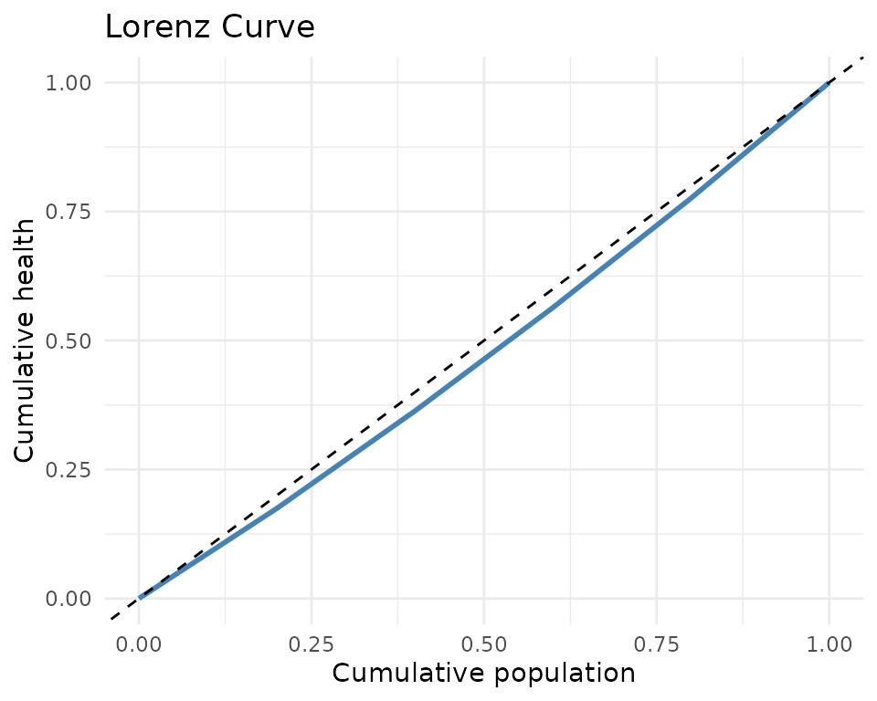

Inequality Measurement in DCEA
Source:vignettes/v04_inequality_measures.Rmd
v04_inequality_measures.RmdOverview
dceasimR provides five inequality measures commonly used
in DCEA: SII, RII, concentration index, Atkinson index, and Gini
coefficient.
Slope Index of Inequality (SII)
The SII estimates the absolute health difference from the most to the least deprived using a weighted regression on ridit scores.
calc_sii(df, "mean_hale", "group", "pop_share")
#> $sii
#> [1] 18.15
#>
#> $rii
#> [1] 0.304326
#>
#> $se_sii
#> [1] 0.4112988
#>
#> $p_value
#> [1] 2.561597e-05
#>
#> $model
#>
#> Call:
#> stats::lm(formula = h ~ ridit, weights = w)
#>
#> Coefficients:
#> (Intercept) ridit
#> 50.56 18.15A positive SII means better health in more advantaged groups.
Relative Index of Inequality (RII)
The RII expresses the SII relative to mean health, facilitating comparisons across populations and time.
calc_rii(df, "mean_hale", "group", "pop_share")
#> $sii
#> [1] 18.15
#>
#> $rii
#> [1] 0.304326
#>
#> $se_sii
#> [1] 0.4112988
#>
#> $p_value
#> [1] 2.561597e-05
#>
#> $model
#>
#> Call:
#> stats::lm(formula = h ~ ridit, weights = w)
#>
#> Coefficients:
#> (Intercept) ridit
#> 50.56 18.15
#>
#>
#> $se_rii
#> [1] 0.006896357Concentration Index
calc_concentration_index(df, "mean_hale", "group", "pop_share",
type = "standard")
#> $ci
#> [1] 0.04869215
#>
#> $se
#> [1] NA
#>
#> $type
#> [1] "standard"Atkinson Index
calc_atkinson_index(df$mean_hale, df$pop_share, epsilon = 1)
#> [1] 0.003744955Gini Coefficient
calc_gini(df$mean_hale, df$pop_share)
#> [1] 0.04869215All indices at once
calc_all_inequality_indices(df, "mean_hale", "group", "pop_share",
epsilon_values = c(0.5, 1, 2))
#> # A tibble: 7 × 3
#> index value description
#> <chr> <dbl> <chr>
#> 1 sii 18.2 Slope Index of Inequality
#> 2 rii 0.304 Relative Index of Inequality
#> 3 concentration_index 0.0487 Concentration Index (standard)
#> 4 gini 0.0487 Gini coefficient
#> 5 atkinson_epsilon_0.5 0.00187 Atkinson index (epsilon = 0.5)
#> 6 atkinson_epsilon_1 0.00374 Atkinson index (epsilon = 1)
#> 7 atkinson_epsilon_2 0.00751 Atkinson index (epsilon = 2)Lorenz curves
ld <- compute_lorenz_data(df$mean_hale, df$pop_share, "England 2019")
library(ggplot2)
ggplot(ld, aes(cum_pop, cum_health)) +
geom_line(colour = "steelblue", linewidth = 1) +
geom_abline(linetype = "dashed") +
labs(x = "Cumulative population", y = "Cumulative health",
title = "Lorenz Curve") +
theme_minimal()